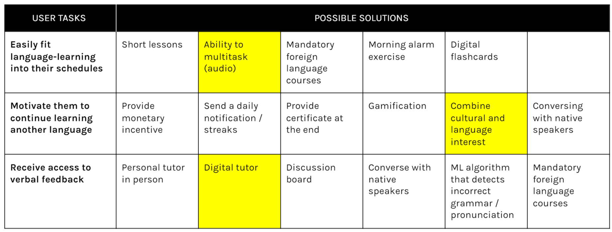
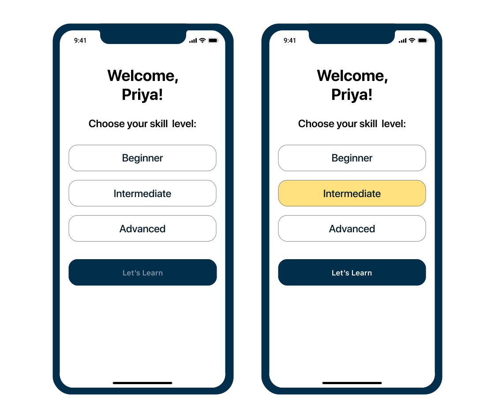

PRODUCT DESIGN, PERSONAL PROJECT
Creating an interactive and time-friendly language-learning experience for busy students.
Team: Myself (Personal Project)
Role: Designer
Duration: Oct 2019 (4 weeks)
Learning a new language as a student isn’t easy. I designed Cultura to explore how to create a motivating and accessible language-learning experience for students, centered around verbal communication.
From co-founding an adult ESL program in my hometown to learning languages both inside and outside of classrooms, I’ve been excited and challenged by the language-learning space. It wasn’t until a conversation with my friend who was trying to pick up Korean that I really considered: How can we make it easier for students to learn a new language?
To get a better understanding of the language-learning problem space, I interviewed six university students to determine:
MOTIVATIONS AND NEEDS
1. Students value free resources and verbal communication.
2. Students started learning a language in the first place because of their cultural ties to the language.
PROBLEMS
1. It’s difficult to fit into their schedules.
2. They lose motivation quickly.
3. They don’t have access to feedback.
I then turned the three problems into user tasks and created a modified morphological chart to determine the most effective means of achieving those tasks. I went forward with the highlighted potential solutions after sketching possible combinations.
How does Cultura stand out in the language-learning sector?
DUOLINGO
Duolingo has the most downloaded language app in the world, combining lessons and gamification to encourage users to learn a language. Duolingo also provides podcasts, events, and stories for a more well-rounded education.
Although Duolingo is very effective, users mentioned that it was difficult to keep up with in their busy schedules and that it was sometimes a source of stress. It also misses out on the cultural aspect (though there are real-life stories in the podcasts!) and does not provide direct feedback on pronunciation.
HELLOTALK
HelloTalk lets people from around the world communicate to learn each others’ languages. This app provides a great source to learn about pronunciation, grammar, and culture directly from people of the target languages.
However, initiating conversations, building relationships, and correcting penpals’ grammar can take a lot of time and energy that busy students might not have on a daily basis.
Cultura differentiates itself from other digital language-learning products in its time-reducing aspect while focusing on the why of learning a language: connecting to a culture through language and verbal communication. Duolingo and HelloTalk are amazing at providing active vocabulary and grammar practice, and Cultura can supplement those resources by fitting into the users’ existing lifestyles, minimizing the time a person needs to set out of their day to learn.
I chose two success metrics to validate the design:
SUCCESS METRICS
1. Task completion rate: 92%
2. Net Promoter Score: 51.5
1. The task completion rate suggests the clarity of the design. I set the success threshold to 92% to be in the top quartile; anything lower than 92% means that there may be significant usability problems.
2. The Net Promoter Score is a bit more tricky since the result will be based solely on the users’ first impressions, but it does provide a quantitative measure to determine their opinions of the product. I set my benchmark NPS to be 51.5, based on the NPS of another product in the same industry .
After lots of sketching and digitizing those sketches, I was ready to see how the designs would hold up. I conducted 3 usability testing sessions and compared my findings to the success metrics. The results didn’t quite hit the mark:
SUCCESS METRIC RESULTS
1. Task completion rate
Goal: 92% / Actual: 87%.2. Net Promoter Score
Goal: 51.5 / Actual: 0.
Out of the 15 tasks, 13 were completed correctly. This result of 87% did not meet the benchmark of 92%, but since it was just one task from reaching the goal, I knew there were not major issues with the design clarity.
The Net Promoter Score of 0 did not meet the benchmark of 51.5. However, I was willing to continue with this design direction because of the other positive qualitative feedback from the users. I realized during the testing sessions that the score of 0 could have been inflated as well, since users may have felt uncomfortable letting me know their true thoughts in person. It would also be difficult to predict if the users would continue using this product from this metric alone. Next time, I would choose a more concrete metric for this situation and use the NPS in an anonymous setting or after the user has used a product for a longer time.
I gathered common feedback after calculating the success metrics to see if any insights could contribute to those results:
TOP 4 INSIGHTS
1. The app functionality is unclear upfront.
2. The app is not beginner-friendly.
3. Lack of trust in feedback.
4. Episodes are too long.
The insights showed that the design did not meet users’ expectations. Next time, running through a quick heuristic evaluation before usability testing will help me avoid making the same mistakes. The design also does not consider ALL users — the biggest differentiating factor between users was not the specific reasons for learning a language but the users’ level of expertise in the languages, which I did not account for.
The users expected an explanation of the app at the beginning or did not fully understand the explanation on the sign up page, so I wanted to make it more clear that the user would be able to listen to listen to episodes in a foreign language and receive feedback on their recorded answers. Since I wanted to make the functionality intuitive, I included a diagnostic quiz that mimics how the app works to give users a clear expectation of how to use the app.
This point ties in with the first issue. I specified the unique experience for each user type (beginner, intermediate, advanced) and how Cultura would accomodate for their levels. If the user knows that they are a complete beginner, they can skip the test.
I also considered the ability for users to self-identify their fluency levels instead of having a quiz choose for them. Although this option may take a shorter time, I decided to go with the quiz because it plays multiple roles—as well as giving the user an idea of how the app works, the diagnostic quiz would excite the user as they anticipate a result. In case they want to change their level, they can do so in Settings. This feature will be tested in following usability testing sessions!
Instead of having feedback from users, the feedback would now be from paid Cultura language experts.
I decreased the length of episodes to around 15 minutes to accommodate for the amount of time each user was expected to spend in one sitting on the app, based on the usability testing sessions.
Throughout the design process, I thought about how this product would function with business requirements. How would this app fund itself? Because one main pillar of the app is accessibility, I did not want this app to be paid. Implementing ads in users’ target languages would provide some learning value to them while funding the product, making this usually intrusive advertisement component more pleasant. However, could these ads be implemented if the user downloads all their lessons? I would have to research more about the business aspect of products to determine if this method is feasible.
The second round of usability testing is in progress.
Testing the success of the app would be difficult without creating a working prototype because it is meant to be used over time. If I were to develop the app, these are some KPIs I would use to gauge the product’s success, determined by engagement:
KEY PERFORMANCE INDICATORS
1. Episode completion rate
Goal: 35%, based on the average length of Cultura episodes (around 15 minutes).2. Listen frequency
Goal: 7 episodes per week, based on the US average.3. Feedback-to-listen ratio
Goal: This data would be important to determine how useful the feedback feature is. Because I couldn’t find a benchmark for this, I would likely do some testing to determine this number.
After usability testing, I would implement those findings as well as the business and ethical considerations.
From research to a high-fidelity prototype, this project challenged me to practice UI principles and more:
1. Sketch early. When I hit roadblocks, drawing out different design options on paper helped me clearly and quickly visualize which ones might work better than others.
2. Collect more numbers. Even though I depended on metrics to validate my designs during usability testing, I still found myself unsure of the results. This uncertainty came from one of my constraints—the small sample size I gathered from my preliminary research. Having more data to analyze next time will give me more confidence that the design is meeting users’ needs in the right way.
This case study is a condensed version of all my methods and design decisions. Feel free to email me for more details about this project!